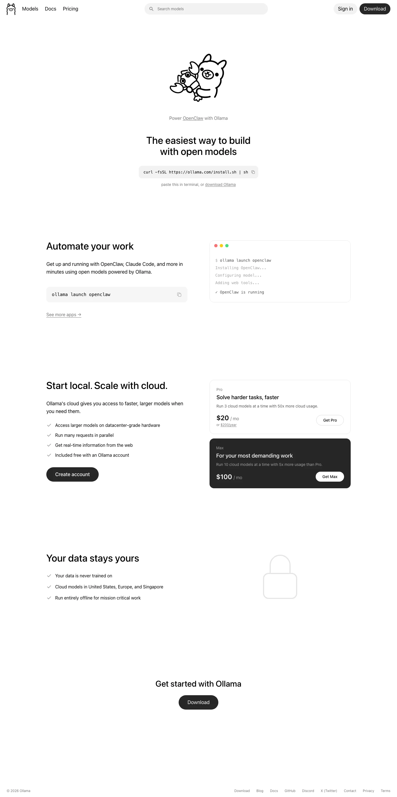

Ollama 主题
Ollama 的 Design.md 主题展示，围绕AI、媒体内容、教育服务、公共服务组织页面。
Run LLMs locally. Terminal-first, monochrome simplicity.
AI媒体内容教育服务公共服务SaaS 产品开发工具浅色界面B2B 产品效率工具专业工具

来源
- 来源
- getdesign.md
- 镜像
- github:VoltAgent/awesome-design-md
- 网站
- https://ollama.com/
- 详情
- https://getdesign.md/ollama/design-md
色板
#171717: #171717#000000: #000000#090909: #090909#ffffff: #ffffff#525252: #525252#737373: #737373#a3a3a3: #a3a3a3#fafafa: #fafafa#e5e5e5: #e5e5e5#d4d4d4: #d4d4d4#ff5f56: #ff5f56#ffbd2e: #ffbd2e
字体
display: SF Pro Roundedbody: ui-sans-serifmono: ui-monospacehints: SF Pro Rounded,ui-sans-serif,ui-monospace,SF Pro,Inter,Roboto
圆角
control: 9999pxcard: 12pxpreview: 12pxpill: 9999pxsource: design-md
间距
xxs: 2pxxs: 4pxsm: 8pxmd: 12pxlg: 16pxxl: 24pxxxl: 32pxsection: 88pxsource: design-md
使用建议
建议
- 建议：Treat the page like a Markdown document: single reading column, plenty of {spacing.section} air between sections, no decorative dividers。
- 建议：Use {component.button-primary} (black pill) for every primary action. There is no green, no blue, no brand-tinted CTA。
- 建议：Default to {rounded.full} for any interactive element. Cards get {rounded.lg} (12px) and that is the only exception。
- 建议：Use {typography.display-xl} SF Pro Rounded for the hero headline and {typography.body-md} system sans for everything else. Avoid intermediate display sizes。
- 建议：Reserve {component.pricing-card-dark} (the inverted dark surface) for exactly one "look here" moment per page — never use it twice。
避免
- 避免：introduce gradients, drop shadows, or atmospheric backgrounds. The canvas is pure {colors.canvas}。
- 避免：add brand colors. The system is {colors.primary} (black) on {colors.canvas} (white) with {colors.body} (gray) text. That is it。
- 避免：soften pills or sharpen cards — pills stay {rounded.full}, cards stay {rounded.lg}. Don't introduce {rounded.md} for buttons or {rounded.full} for cards。
- 避免：lift cards with shadows. Use a 1px {colors.hairline} border or invert to {colors.surface-dark} — those are the only two card treatments。
- 避免：replace {ui-sans-serif} with a branded display body face. The system relies on {system-ui} rendering to feel native。
查看 DESIGN.md